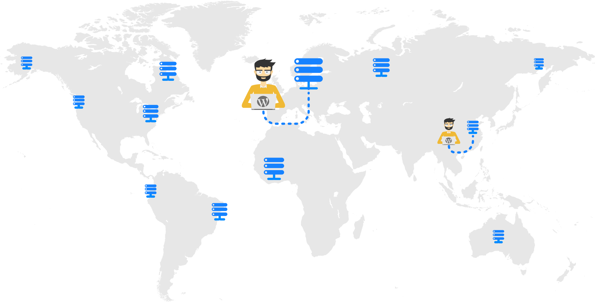

servir contenido
backend (hosting)
pintar contenido
frontend (browser)
1.- Descubrir el servidor
2.- Abrir diálogo
3.- Negociar conexión segura
4.- Verificar validez certificado
5.- Obtener datos
6.- Enviar datos
DNS Lookup
1. un DNS anycast

Cloudflare (free) 36%
Dnsmadeeasy (~3$/a)
Dondominio (free*)
AWS Route53 (>1$/m) 30%
2. DNS-prefetch (para llamadas a otros dominios)
<head>
...
<link rel="dns-prefetch" href="https://my.cdn.com" />
<link rel="dns-prefetch" href="https://api.my-app.com" />
</head>
más info: https://3perf.com/blog/link-rels/
Antes de enviar nada es necesario
establecer una conexión TCP
El gran problema la latencia:
El tiempo que ocurre entre que envías una petición hasta que recibes el primer bit de respuesta.
Buena latencia
Servidor con protocolos HTTP/2
compresión, multiplexing, contenido en binario, ...
Tiene un peso importante durante la conexión
TLS 1.3 (IETF Agosto 2018)
Negocia en 1 RTT + Seguridad + Zero-RTT
Chrome developer tools → Pestaña Seguridad
HTTP/2 se ve limitado por TCP en redes congestionadas
Google Quic
Combina lo bueno de UDP y TLS1.3
Casi listo estandar IETF (finales de 2019)
le llamaran HTTP/3
OCSP (Online Certificate Status Protocol)
Una conexion adicional
OCSP Stapling
Aquí se puede validar https://decoder.link/sslchecker
Acceso a archivos
Consultas Dase de Datos
Proceso página
TTFB
Un webserver liviano: nginx
Apache Nginx
------ ------
<VirtualHost *:80> server {
listen 80;
ServerName yoursite.com
ServerAlias www.yoursite.com server_name yoursite.com www.yoursite.com;
DocumentRoot /path/to/root root /path/to/root;
AllowOverride All IMPOSIBLE !!!!!
DirectoryIndex index.php index index.php;
CustomLog /path/to/log combined access_log /path/to/log main;
ErrorLog /path/to/log error_log /path/to/log error;
Alias /url/ "/path/to/files" location /url/ {
<Directory "/path/to/files"> alias /path/to/files;
... ...
.. ..
. .
</VirtualHost *:80> }
location = /blog [1][exact match]
location ^~ /blog/Novedades [2][regex priority + case sensitive + el mas especifico gana]
location ^~ /blog/Novedades/si [2][regex priority + case sensitive + el mas especifico gana]
location ~ /blog/NoVeDaDes [3][regex case sensitive + el 1º gana]
location ~* /blog/novedades [3][regex case insensitive + el 1º gana]
location / [4][empieza por + el mas especifico gana]
location /blog
fisharebest.stonystratford.org
(breve y bien explicado)
location / {
try_files $uri $uri/ /index.php?$args;
}
location ~* \.php$ {
try_files $uri = 404;
fastcgi_pass unix:php-fpm.sock;
fastcgi_param SCRIPT_FILENAME $document_root$fastcgi_script_name;
fastcgi_index index.php;
include fastcgi_params;
}
location ~* \.(?:atom|bmp|bz2|css|doc|eot|exe|gif|etc.)$ {
expires max;
}
bash-4.4# cat /etc/nginx/fastcgi_params
fastcgi_param QUERY_STRING $query_string;
fastcgi_param REQUEST_METHOD $request_method;
fastcgi_param CONTENT_TYPE $content_type;
fastcgi_param SCRIPT_NAME $fastcgi_script_name;
fastcgi_param REQUEST_URI $request_uri;
fastcgi_param DOCUMENT_URI $document_uri;
fastcgi_param DOCUMENT_ROOT $document_root;
fastcgi_param SERVER_PROTOCOL $server_protocol;
fastcgi_param REQUEST_SCHEME $scheme;
fastcgi_param HTTPS $https if_not_empty;
fastcgi_param SERVER_PORT $server_port;
fastcgi_param SERVER_NAME $server_name;
...
JOAN VEGA
joan@wetopi.com
@sitamet
linkedin.com/in/joanvega/
Download:
github.com/sitamet/claves-para-servir-wordpress-rapido